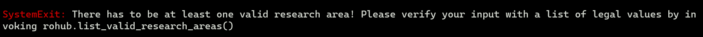
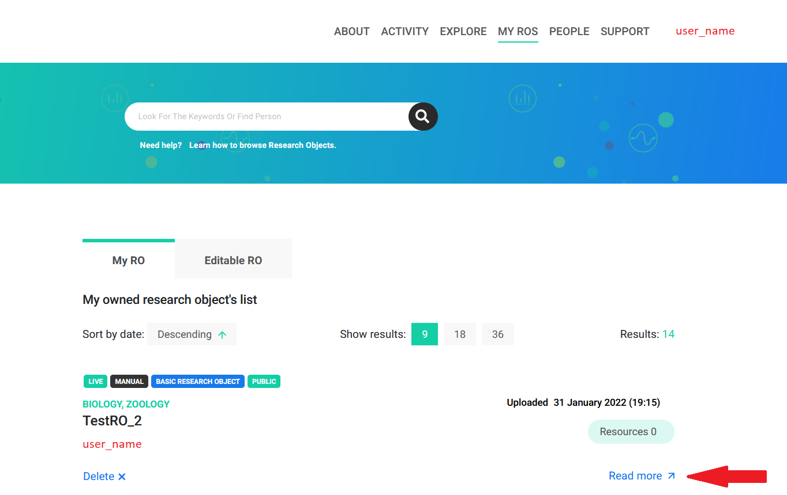
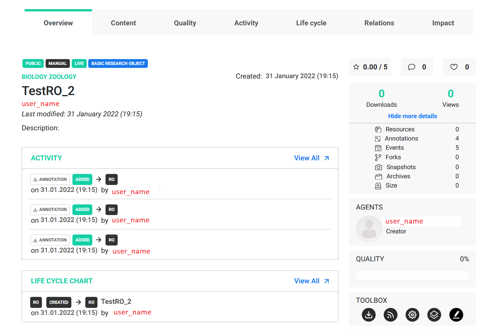

Install and import the library
The fastest and easiest way to install the rohub library is with a pip distribution system.
[ ]:
pip install rohub -U
First, load the rohub package
[ ]:
import rohub
Authentication
Then, you need to authenticate yourself. If you already have an account in the rohub portal, you can use your credentials to directly log in using the library. In case you don’t, you can sign up here: https://login.rohub.org/
[ ]:
rohub.login(username = 'example@mail.com', password = '1234')
It is not required, but we would highly recommend storing your credentials in the text file or as an environment variable. Therefore, we can avoid leaving any sensitive information in the notebook.
[ ]:
# loading credentials from external file
user_email = open("user_email.txt").read()
user_pwd = open("user_pwd.txt").read()
rohub.login(username = user_email, password = user_pwd)
Output: Logged successfully as user_name
After receiving confirmation about successful login, you can start using the library. The essential structure for the rohub environment is a research object. Here is how one can be created using the library interface.
Create a new Research Object
A function rohub.ros_create requires two arguments: a title and a list of research areas.
Example 1
Here is an example of the Research Object that we named The influence of eating habits on sleep
[4]:
ro_title = "The influence of eating habits on sleep"
This study is related to Nutrition and Medicine. Therefore, we assign a variable that contains those for further re-usability.
[5]:
ro_research_areas = ['Nutrition', 'Medicine']
[ ]:
rohub.ros_create(title = ro_title, research_areas = ro_research_areas)
The function was executed with errors. Therefore, the research object was not created! The reason for that can be found in inspecting error details.
Now, we can display an array of valid values for the research areas we would like to associate with the ro.
[7]:
list_valid_areas = rohub.list_valid_research_areas()
# slicing the list just for display purposes
list_valid_areas[:5]
[7]:
['Acoustics',
'Aerodynamics',
'Agronomy',
'Analytical chemistry',
'Applied sciences']
One could write a simple function to check multiple values at once before making a call.
[8]:
def check_research_areas(my_research_areas):
list_valid_areas = rohub.list_valid_research_areas()
list_valid_ra = []
for r_area in my_research_areas:
if r_area in list_valid_areas:
list_valid_ra.append(r_area)
return list_valid_ra
check_research_areas(['Nutrition', 'Medicine'])
[8]:
[]
As expected, the list is empty. We have not passed a single research area that is accepted by the service. Let’s try again with slightly modified input.
Example 2
Medical science is an accepted value. Therefore, changing Medicine to Medical science should be sufficient. Now we can re-run the function.
[9]:
ro_research_areas = ['Nutrition', 'Medical science']
rohub.ros_create(title = ro_title, research_areas = ro_research_areas)
Research Object was successfully created with id = 623a5e15-3a3e-437b-95d1-684dbb093b51
[9]:
ResearchObject(identifier=623a5e15-3a3e-437b-95d1-684dbb093b51, post_request=False)
Example 3
As presented in the image above the research object was successfully created. It is worth noticing that only Medical science is a valid research area, therefore Nutrition was discarded by the library. Below you can find another example of that behavior.
[10]:
ro_title = "TestRO"
ro_research_areas = ['Acoustics', 'Aerodynamics', 'Agronomy', 'invalid_r_area_1', 'invalid_r_area_2']
rohub.ros_create(title = ro_title, research_areas = ro_research_areas)
Research Object was successfully created with id = 4954ed97-b583-4eb1-b475-42864f80f683
[10]:
ResearchObject(identifier=4954ed97-b583-4eb1-b475-42864f80f683, post_request=False)
Example 4
Let’s create one more and assign it to a variable for further re-usability. It is crucial to understand that the ros_create function returns an accessible python object, and at the same time, the object you get is being created in the service.
[11]:
ro_title = "TestRO_2"
ro_research_areas = ['Biology', 'Zoology']
ro = rohub.ros_create(title = ro_title, research_areas = ro_research_areas)
Research Object was successfully created with id = 5d1d0f06-b7da-4a16-952b-e1c078283cf5
The rohub.ros_create() function creates a new Research Object which can be viewed in the My ROs section at the top menu bar of the portal. 
More details can be viewed by clicking the Read more button. 
This function also instantiates a Python object that can be reused and was assigned to the ro variable. Properties of the research object can be reached now by simply accessing the object’s attribute.
[12]:
ro.title
[12]:
'TestRO_2'
[13]:
ro.research_areas
[13]:
['Biology', 'Zoology']
Template usage for Research Object creation
On top of the two required parameters, multiple optional parameters can help adjust the creation of research objects to one’s needs. For more details, you can refer to the documentation.
A very useful one is a use_template flag. This parameter is set to False by default and does not affect the creation of the object. However, if the value of use_template is True, the created object will automatically receive the corresponding template.
[14]:
ro = rohub.ros_create(title = "Shark research", research_areas = ["Biology", "Zoology"], use_template = False)
Research Object was successfully created with id = 565710be-d927-4d95-b1d7-703142a748e9
[15]:
print(ro.template)
None
[17]:
ro = rohub.ros_create(title = "Shark research", research_areas = ["Biology", "Zoology"], use_template = True)
An exception has occurred, use %tb to see the full traceback.
SystemExit: Aborting... ros type is mandatory when use_template=True. Please specify ro_type!
As it turns out, specifying a use_template flag is not sufficient, since this parameter is dependent on the ros_type.
Similar to research_areas the ros_type parameter has a limited set of valid values. To view all possible options one can use the rohub.list_valid_ros_types() function.
[18]:
rohub.list_valid_ros_types()
[18]:
['Basic Research Object',
'Bibliography-centric Research Object',
'Data-centric Research Object',
'Executable Research Object',
'Process-centric Research Object',
'Service-centric Research Object',
'Software-centric Research Object',
'Workflow-centric Research Object']
[19]:
ro = rohub.ros_create(title = "Shark research", research_areas = ["Biology", "Zoology"], ros_type = 'Process-centric Research Object', use_template = True)
Unfortunately there is no template associated with ros type that was chosen. The research object will be created without any template!
Research Object was successfully created with id = ca36cfa7-3cd2-4c81-8b73-2e3d004d398d
[20]:
ro.ros_type
[20]:
'Process-centric Research Object'
[21]:
print(ro.template)
None
As we can see, the object was successfully created, but there is information that the library was unable to get a template for it. Unfortunately, not all research object types have an associated template to them. One can find it handy to check this relation before deciding how to initialize the research object. This can be done easily by executing rohub.show_valid_type_matching_for_ros()
[22]:
rohub.show_valid_type_matching_for_ros()
[22]:
{'Basic Research Object': None,
'Bibliography-centric Research Object': ['Bibliography Centric Research Object folders structure'],
'Data-centric Research Object': ['Data Centric Research Object folders structure'],
'Executable Research Object': ['Executable Research Object folders structure'],
'Process-centric Research Object': None,
'Service-centric Research Object': None,
'Software-centric Research Object': None,
'Workflow-centric Research Object': ['Workflow Centric Research Object folders structure']}
The Process-centric Research Object doesn’t have any associated templates! Let’s try a different one to illustrate what it would look like to create a research object with the proper template.
[23]:
ro = rohub.ros_create(title = "Shark research", research_areas = ["Biology", "Zoology"], ros_type = 'Bibliography-centric Research Object', use_template = True)
Research Object was successfully created with id = 2907574d-d2d2-4945-baeb-7f67970dd6bf
[24]:
ro.ros_type
[24]:
'Bibliography-centric Research Object'
[25]:
ro.template
[25]:
'Bibliography Centric Research Object folders structure'
Load an existing Research Object
Before one can work with an existing research object, it has to be loaded using the rohub.ros_load() function, which expects exactly one argument - the research object’s identifier. This will return a reusable python object, exactly as it was with creation.
Example 1 - loading our own ROS
Let’s take and load the one which we already created in this tutorial. Its title is The influence of eating habits on sleep.
We could look up the id of this research object, but that is not always the case, so let’s pretend we only remember the title, and we know that it was our research object. There are a couple of ways of getting an identifier of the research object we are looking for.
Let’s examine one of them using list_my_ros() function.
[4]:
my_ros = rohub.list_my_ros()
my_ros
[4]:
| identifier | title | description | type | research_areas | status | created_on | created_by | modified_on | access_mode | owner | shared_link | |
|---|---|---|---|---|---|---|---|---|---|---|---|---|
| 0 | 2907574d-d2d2-4945-baeb-7f67970dd6bf | Shark research | None | Bibliography-centric Research Object | [Biology, Zoology] | LIVE | 2022-01-31T18:56:56.569095+00:00 | liza.poltavchenko00@gmail.com | 2022-01-31T18:56:56.911862+00:00 | PUBLIC | liza.poltavchenko00@gmail.com | https://w3id.org/ro-id/2907574d-d2d2-4945-baeb... |
| 1 | ca36cfa7-3cd2-4c81-8b73-2e3d004d398d | Shark research | None | Process-centric Research Object | [Biology, Zoology] | LIVE | 2022-01-31T18:56:40.803860+00:00 | liza.poltavchenko00@gmail.com | 2022-01-31T19:29:33.486981+00:00 | PUBLIC | liza.poltavchenko00@gmail.com | https://w3id.org/ro-id/ca36cfa7-3cd2-4c81-8b73... |
| 2 | 565710be-d927-4d95-b1d7-703142a748e9 | Shark research | None | Basic Research Object | [Biology, Zoology] | LIVE | 2022-01-31T18:56:13.645402+00:00 | liza.poltavchenko00@gmail.com | 2022-01-31T19:25:08.501855+00:00 | PUBLIC | liza.poltavchenko00@gmail.com | https://w3id.org/ro-id/565710be-d927-4d95-b1d7... |
| 3 | 5d1d0f06-b7da-4a16-952b-e1c078283cf5 | TestRO_2 | None | Basic Research Object | [Biology, Zoology] | LIVE | 2022-01-31T18:56:00.994104+00:00 | liza.poltavchenko00@gmail.com | 2022-01-31T18:56:01.373351+00:00 | PUBLIC | liza.poltavchenko00@gmail.com | https://w3id.org/ro-id/5d1d0f06-b7da-4a16-952b... |
| 4 | 4954ed97-b583-4eb1-b475-42864f80f683 | TestRO | None | Basic Research Object | [Acoustics, Aerodynamics, Agronomy] | LIVE | 2022-01-31T18:55:55.244617+00:00 | liza.poltavchenko00@gmail.com | 2022-01-31T18:55:55.649435+00:00 | PUBLIC | liza.poltavchenko00@gmail.com | https://w3id.org/ro-id/4954ed97-b583-4eb1-b475... |
| 5 | 623a5e15-3a3e-437b-95d1-684dbb093b51 | The influence of eating habits on sleep | None | Basic Research Object | [Medical science] | LIVE | 2022-01-31T18:55:48.145155+00:00 | liza.poltavchenko00@gmail.com | 2022-01-31T18:55:48.463100+00:00 | PUBLIC | liza.poltavchenko00@gmail.com | https://w3id.org/ro-id/623a5e15-3a3e-437b-95d1... |
The results are presented as Panda’s DataFrame. The well-known and capable data structure in the scientific community. In the snippet below, we are referencing one particular research object by capturing its identifier.
[6]:
loaded_ro_id = my_ros.loc[5, 'identifier']
loaded_ro_id
[6]:
'623a5e15-3a3e-437b-95d1-684dbb093b51'
Now, let’s load the research object.
[7]:
loaded_ro = rohub.ros_load(identifier = loaded_ro_id)
Research Object was successfully loaded with id = 623a5e15-3a3e-437b-95d1-684dbb093b51
We can also inspect some of its attributes.
[27]:
loaded_ro.title
[27]:
'The influence of eating habits on sleep'
[28]:
loaded_ro.research_areas
[28]:
['Medical science']
Example 2 - loading ROS that belongs to someone else
We often work with our research objects, although that is not always the case. In the scenario where we would like to load a research object that belongs to someone else, we would need a different approach in finding the corresponding identifier.
For that purpose, we could use a ros_find function that can display all PUBLIC research objects.
[8]:
all_ros = rohub.ros_find()
all_ros
[8]:
| identifier | title | description | type | research_areas | status | created_on | created_by | modified_on | access_mode | owner | shared_link | |
|---|---|---|---|---|---|---|---|---|---|---|---|---|
| 0 | 6077e014-ded1-45e3-98a4-3b10ad8f8e59 | Substrate and benthic habitat map of the south... | Data, workflow and results of the RSOBIA analy... | Basic Research Object | [Earth sciences] | LIVE | 2022-02-03T12:56:54.674971+00:00 | rpalma@man.poznan.pl | 2022-02-03T16:08:50.433228+00:00 | PUBLIC | rpalma@man.poznan.pl | https://w3id.org/ro-id/6077e014-ded1-45e3-98a4... |
| 1 | 732f0254-b159-4526-b176-700bd06f5e20 | Modelling of the 2011-2012 inflation at Santor... | This Research Object has been created by the R... | Workflow-centric Research Object | [Earth sciences] | LIVE | 2022-02-02T18:29:05.488826+00:00 | elisa.trasatti@ingv.it | 2022-02-02T19:08:49.081203+00:00 | PUBLIC | elisa.trasatti@ingv.it | https://w3id.org/ro-id/732f0254-b159-4526-b176... |
| 2 | ad7980bf-827a-4052-844e-fa21dacac56a | Mt. Etna (Italy) seismic activity from 2022-01... | This RO contains the seismicity occurring at M... | Bibliography-centric Research Object | [Earth sciences] | LIVE | 2022-02-02T15:37:44.820189+00:00 | service-account-generation-service | 2022-02-02T17:48:52.648736+00:00 | PUBLIC | service-account-generation-service | https://w3id.org/ro-id/ad7980bf-827a-4052-844e... |
| 3 | 2f618744-fcc2-4cc7-8cf5-297ef245bdd3 | Mt. Etna (Italy) seismic activity from 2021-12... | This RO contains the seismicity occurring at M... | Bibliography-centric Research Object | [Earth sciences] | LIVE | 2022-02-02T15:36:51.064746+00:00 | service-account-generation-service | 2022-02-02T17:47:13.812853+00:00 | PUBLIC | service-account-generation-service | https://w3id.org/ro-id/2f618744-fcc2-4cc7-8cf5... |
| 4 | f1515645-37a5-4186-bfa4-01d82efcde18 | Mt. Etna (Italy) seismic activity from 2021-12... | This RO contains the seismicity occurring at M... | Bibliography-centric Research Object | [Earth sciences] | LIVE | 2022-02-02T15:36:27.010770+00:00 | service-account-generation-service | 2022-02-02T17:47:03.250491+00:00 | PUBLIC | service-account-generation-service | https://w3id.org/ro-id/f1515645-37a5-4186-bfa4... |
| ... | ... | ... | ... | ... | ... | ... | ... | ... | ... | ... | ... | ... |
| 1050 | 834fb808-6076-4794-9fa7-86751136506f | Etna Eruption Research Object TEST | None | Basic Research Object | [Earth sciences] | LIVE | 2021-11-08T11:19:11.938684+00:00 | dario.stelitano@ingv.it | 2021-11-08T11:24:35.467546+00:00 | PUBLIC | dario.stelitano@ingv.it | https://w3id.org/ro-id/834fb808-6076-4794-9fa7... |
| 1051 | b040c5de-3e8a-49be-9b63-1091dd284cb2 | Volcano and Seismic source Modelling VSM | The VSM (Volcano and Seismic source Modelling)... | Workflow Research Object | [Earth sciences] | ARCHIVE | 2021-10-22T10:59:17.978695+00:00 | gosiaw@man.poznan.pl | 2021-11-03T09:58:50.855738+00:00 | PUBLIC | gosiaw@man.poznan.pl | https://w3id.org/ro-id/b040c5de-3e8a-49be-9b63... |
| 1052 | 0c566809-670b-41f7-9999-ac913a934b5b | Volcano and Seismic source Modelling VSM | The VSM (Volcano and Seismic source Modelling)... | Workflow Research Object | [Earth sciences] | ARCHIVE | 2021-10-22T10:57:16.765937+00:00 | gosiaw@man.poznan.pl | 2021-11-03T09:58:50.855738+00:00 | PUBLIC | gosiaw@man.poznan.pl | https://w3id.org/ro-id/0c566809-670b-41f7-9999... |
| 1053 | bb02f6ca-183f-4a02-9c58-c3cb3129aa59 | In My Backyard | The project aims to understand and map the use... | Basic Research Object | [] | LIVE | 2021-10-22T10:36:34.684359+00:00 | gosiaw@man.poznan.pl | 2021-11-03T09:58:50.855738+00:00 | PUBLIC | gosiaw@man.poznan.pl | https://w3id.org/ro-id/bb02f6ca-183f-4a02-9c58... |
| 1054 | 68b7aa70-da01-4042-9fea-d6743381084c | Visualize 3 days forecast of Birch pollen | Retrieve Copernicus data from CAMS and visuali... | Basic Research Object | [] | LIVE | 2021-10-22T10:34:45.276501+00:00 | gosiaw@man.poznan.pl | 2021-11-03T09:58:50.855738+00:00 | PUBLIC | gosiaw@man.poznan.pl | https://w3id.org/ro-id/68b7aa70-da01-4042-9fea... |
1055 rows × 12 columns
As a result, we are getting a Panda’s DataFrame object. We can query our data on two different levels, either by specifying optional parameter search at the function level or by querying DataFrame directly. The latter is more robust, but the downside is that we are loading a significant amount of data into our local scope. The former approach will be presented in the next chapter.
We are going to look for a specific author by querying based on the owner value.
[9]:
elisa_ros = all_ros[all_ros.owner == 'elisa.trasatti@ingv.it']
elisa_ros
[9]:
| identifier | title | description | type | research_areas | status | created_on | created_by | modified_on | access_mode | owner | shared_link | |
|---|---|---|---|---|---|---|---|---|---|---|---|---|
| 1 | 732f0254-b159-4526-b176-700bd06f5e20 | Modelling of the 2011-2012 inflation at Santor... | This Research Object has been created by the R... | Workflow-centric Research Object | [Earth sciences] | LIVE | 2022-02-02T18:29:05.488826+00:00 | elisa.trasatti@ingv.it | 2022-02-02T19:08:49.081203+00:00 | PUBLIC | elisa.trasatti@ingv.it | https://w3id.org/ro-id/732f0254-b159-4526-b176... |
| 938 | 61bceafe-5b48-4548-8caf-4142153b1b1b | Mean ground velocities from ALOS-2 data at Cha... | This Research Object contains the raster file ... | Data-centric Research Object | [Earth sciences] | SNAPSHOT | 2021-12-13T17:51:39.249280+00:00 | elisa.trasatti@ingv.it | 2021-12-13T17:51:56.118622+00:00 | PUBLIC | elisa.trasatti@ingv.it | https://w3id.org/ro-id/61bceafe-5b48-4548-8caf... |
| 1028 | 0938a79e-f5a6-4481-b01a-a82e17f7d51a | Surface deformation related to the eruption (2... | This Research Object has been created by the R... | Code Research Research Object | [Earth sciences] | LIVE | 2021-11-10T18:55:24.946015+00:00 | elisa.trasatti@ingv.it | 2021-11-10T18:56:15.966137+00:00 | PUBLIC | elisa.trasatti@ingv.it | https://w3id.org/ro-id/0938a79e-f5a6-4481-b01a... |
| 1029 | 09d35670-c07e-41f2-94f9-c58119e33b60 | Modelling of the 2011-2012 inflation at Santor... | This Research Object has been created by the R... | Code Research Research Object | [Earth sciences] | LIVE | 2021-11-10T14:46:19.306390+00:00 | elisa.trasatti@ingv.it | 2021-11-10T14:47:25.624453+00:00 | PUBLIC | elisa.trasatti@ingv.it | https://w3id.org/ro-id/09d35670-c07e-41f2-94f9... |
| 1030 | d86d66ff-c096-4e78-b02a-95cfeba21e35 | Modelling of the 1993-1997 inflation at Mt Etn... | This Research Object has been created by the R... | Code Research Research Object | [Earth sciences] | LIVE | 2021-11-10T14:08:28.357310+00:00 | elisa.trasatti@ingv.it | 2021-11-10T14:11:38.960665+00:00 | PUBLIC | elisa.trasatti@ingv.it | https://w3id.org/ro-id/d86d66ff-c096-4e78-b02a... |
| 1031 | 6d6e540b-1b52-4ad1-8906-33d3144fce68 | Modelling of 27 years of subsidence at the vol... | This Research Object has been created by the R... | Code Research Research Object | [Earth sciences] | LIVE | 2021-11-10T14:04:01.839381+00:00 | elisa.trasatti@ingv.it | 2021-11-10T14:05:24.258233+00:00 | PUBLIC | elisa.trasatti@ingv.it | https://w3id.org/ro-id/6d6e540b-1b52-4ad1-8906... |
| 1032 | cdcd3c0a-f280-40de-93e6-9a4ba2be6f67 | Campi Flegrei Caldera (Italy) 2011-2013 deform... | This Research Object has been created by the r... | Code Research Research Object | [Earth sciences] | LIVE | 2021-11-10T13:18:11.714467+00:00 | elisa.trasatti@ingv.it | 2021-11-10T13:19:19.899629+00:00 | PUBLIC | elisa.trasatti@ingv.it | https://w3id.org/ro-id/cdcd3c0a-f280-40de-93e6... |
| 1044 | 7749bd2b-72f8-4a29-8565-20a04f419b3a | Campi Flegrei Caldera (Italy) 2011-2013 deform... | This Research Object has been created by the r... | Code Research Research Object | [Earth sciences] | LIVE | 2021-11-09T21:43:28.116800+00:00 | elisa.trasatti@ingv.it | 2021-11-09T21:45:31.605420+00:00 | PUBLIC | elisa.trasatti@ingv.it | https://w3id.org/ro-id/7749bd2b-72f8-4a29-8565... |
We are picking one of them, based on its index from a slice of the DataFrame that was displayed above.
[10]:
loaded_ro2_id = elisa_ros.loc[1030, 'identifier']
loaded_ro2 = rohub.ros_load(identifier = loaded_ro2_id)
Research Object was successfully loaded with id = d86d66ff-c096-4e78-b02a-95cfeba21e35
[11]:
loaded_ro2.title
[11]:
'Modelling of the 1993-1997 inflation at Mt Etna (Italy) detected by remote sensing and in situ data'
[12]:
loaded_ro2.creator
[12]:
'elisa.trasatti@ingv.it'
Show metadata
Once the research object is loaded, it is possible to use the .show_metadata() method that allows to quickly investigate basic metadata like title, description, research areas, etc., related to the object.
[13]:
loaded_ro.show_metadata()
[13]:
{'identifier': '623a5e15-3a3e-437b-95d1-684dbb093b51',
'shared_link': 'https://w3id.org/ro-id/623a5e15-3a3e-437b-95d1-684dbb093b51',
'title': 'The influence of eating habits on sleep',
'description': None,
'status': 'LIVE',
'access_mode': 'PUBLIC',
'type': 'Basic Research Object',
'template': None,
'created': '2022-01-31T18:55:48.145155Z',
'creator': 'liza.poltavchenko00@gmail.com',
'modificator': 'liza.poltavchenko00@gmail.com',
'modified': '2022-01-31T18:55:48.257515Z',
'importer': None,
'research_areas': ['Medical science'],
'owner': 'liza.poltavchenko00@gmail.com',
'editors': [],
'readers': [],
'rating': '0.00',
'number_of_ratings': 0,
'number_of_likes': 0,
'number_of_dislikes': 0,
'quality': 0,
'size': 1748,
'creation_mode': 'MANUAL',
'doi': None,
'api_link': 'https://api.rohub.org/api/ros/623a5e15-3a3e-437b-95d1-684dbb093b51/'}
[15]:
loaded_ro2.show_metadata()
[15]:
{'identifier': 'd86d66ff-c096-4e78-b02a-95cfeba21e35',
'shared_link': 'https://w3id.org/ro-id/d86d66ff-c096-4e78-b02a-95cfeba21e35',
'title': 'Modelling of the 1993-1997 inflation at Mt Etna (Italy) detected by remote sensing and in situ data',
'description': 'This Research Object has been created by the Reliance-Jupyter of the ADAM platform. It contains results from the run of the VSM code, related to the modelling of the inflation phase at Mt Etna during 1993-1997.',
'status': 'LIVE',
'access_mode': 'PUBLIC',
'type': 'Code Research Research Object',
'template': None,
'created': '2021-11-10T14:08:28.357310Z',
'creator': 'elisa.trasatti@ingv.it',
'modificator': 'elisa.trasatti@ingv.it',
'modified': '2021-11-10T14:11:38.970630Z',
'importer': None,
'research_areas': ['Earth sciences'],
'owner': 'elisa.trasatti@ingv.it',
'editors': [],
'readers': [],
'rating': '0.00',
'number_of_ratings': 0,
'number_of_likes': 0,
'number_of_dislikes': 0,
'quality': 0,
'size': 3286201,
'creation_mode': 'MANUAL',
'doi': None,
'api_link': 'https://api.rohub.org/api/ros/d86d66ff-c096-4e78-b02a-95cfeba21e35/'}